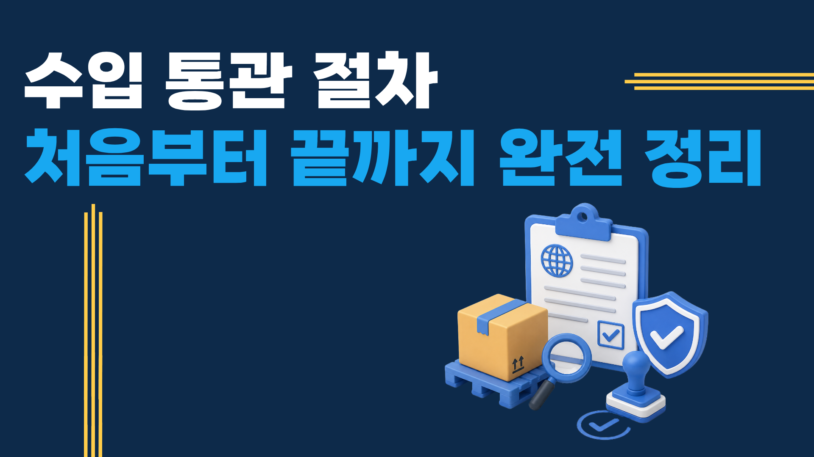

중국 수입 통관에서 처음 막히는 이유는 대부분 세 가지입니다. HS코드 오류, 수입 요건 미확인, 원산지증명서 미제출. HS코드, B/L, 원산지증명서... 낯선 용어가 많지만 흐름을 한 번 이해하면 어렵지 않습니다. 통관 절차 6단계, 필수 서류 목록, HS코드 조회 방법, 한-중 FTA 관세 혜택 적용법, 자주 막히는 상황 TOP 5까지 실무 기준으로 정리했습니다.

1. 중국 수입 통관이란? — 정식 수입신고가 필요한 이유
중국 수입 통관은 중국에서 한국으로 수입되는 화물을 세관에 신고하고 허가를 받는 절차입니다. 단순히 세금을 내는 과정이 아니라, 화물의 품목 분류(HS코드), 수입 요건 확인, 원산지 검증까지 포함하는 복합 절차입니다.
💡 간이통관 vs 정식통관
목록통관(간이통관)은 개인 직구 소액 화물에 적용됩니다. 상업적 목적의 화물, 반복 수입, 일정 금액 이상은 반드시 정식 수입신고를 통해 통관해야 합니다. 포워딩으로 수입하는 업무용 화물은 대부분 정식통관 대상입니다.
구분
목록통관 (간이)
정식 수입신고
적용 대상
개인 직구 소액 화물
상업적 목적 화물, 반복 수입
신고 방식
특송업체가 목록 신고
관세사(또는 포워더 대행)가 수입신고
관세·부가세
일정 금액 이하 면세
HS코드 세율에 따라 납부
수입 요건 확인
간소화
KC인증, 식약처, 검역 등 전면 확인
FTA 적용
불가
CO 제출 시 관세 혜택 적용 가능
2. 중국 수입 통관에 필요한 서류 목록
통관 서류가 불완전하면 세관 검사(검사 지정)가 강화되거나 통관이 보류됩니다. 출발 전에 서류를 미리 준비하는 것이 가장 중요합니다.
서류명
내용
비고
B/L (선하증권) / AWB (항공화물운송장)
화물 선적·운송 증명 서류. 선사 또는 항공사 발행
필수
Commercial Invoice (상업송장)
화물 품목, 단가, 총금액, 거래 조건 명시
필수
Packing List (패킹리스트)
박스별 내용물, 수량, 중량, 부피 명세
필수
HS코드
수입 품목 분류 코드. 관세율·수입 요건 결정
필수
원산지증명서 (CO)
FTA 관세 혜택 적용 시 필요. 중국 세관·상무부 발행
FTA 적용 시 필수
KC인증서
전기용품·생활용품 등 KC 대상 품목 필수
해당 품목
식약처 허가서·수입신고필증
식품, 건강기능식품, 의약외품 등
해당 품목
검역증명서
농산물, 목재류, 동물성 제품 등 검역 대상
해당 품목
카탈로그·사양서
품목 식별이 어려운 기계·부품류
필요 시
3. 중국 수입 통관 절차 6단계
중국 수입 통관 절차는 입항부터 화물 반출까지 6단계입니다. 포워더(통관 대행)가 대부분의 단계를 처리하며, 수입자는 서류 제공과 세금 납부에 집중합니다.
01
입항 전 서류 준비 및 HS코드 확인
화물이 출항하기 전에 B/L, Invoice, Packing List, HS코드를 준비합니다. 수입 요건(KC·식약처·검역 등)이 있는 품목은 반드시 사전 확인이 필요합니다.
HS코드 오류가 통관 불가의 가장 흔한 원인 — 출발 전 확인 필수FTA 적용 시 CO(원산지증명서)를 공장에 미리 요청
02
화물 입항 및 보세창고 반입
화물이 인천항·인천공항에 입항하면 보세창고(또는 보세구역)에 반입됩니다. 이 단계부터 무료 보관 기간이 시작됩니다.
해상 LCL: 국내 CFS 창고 반입해상 FCL: 컨테이너 야드(CY) 또는 지정 보세창고 반입항공: 항공 화물 터미널 보세창고 반입
03
수입신고 (관세사 또는 포워더 대행)
관세사가 세관에 수입신고를 접수합니다. HS코드, 과세가격, 원산지, FTA 적용 여부 등이 신고서에 명시됩니다.
수입신고서 접수 후 세관에서 심사 시작서류 이상 없으면 자동 수리(P/L 심사) 또는 당일 완료
04
세관 심사 및 검사 (필요 시)
세관이 수입신고서와 서류를 심사합니다. 위험 수준에 따라 서류 심사(C 심사), 물품 검사(X-ray 또는 실검사)가 진행될 수 있습니다.
대부분의 화물은 서류 심사 후 1~2일 내 완료실검사 지정 시 검사관이 직접 화물 확인 (1~3일 추가 소요)HS코드 오류, 원산지 의심, 통관 불가 품목 포함 시 장기화 가능
05
관세·부가세 납부
세관 심사 완료 후 관세와 부가세를 납부합니다. FTA CO를 제출한 경우 관세가 감면됩니다.
관세: HS코드에 따른 세율 적용 (한-중 FTA 적용 시 감면)부가세: 수입 부가세는 추후 매입세액공제 가능 (사업자)
06
수입신고 수리 및 화물 반출
관세·부가세 납부 완료 후 수입신고가 수리됩니다. 보세창고에서 화물을 반출해 최종 목적지로 배송합니다.
보세창고 무료 보관 기간 이내 반출 시 창고료 없음 (포워더마다 상이)무료 기간 초과 시 보관료 발생
4. HS코드란? — 조회 방법과 왜 중요한가
HS코드(Harmonized System Code)는 수출입 화물을 국제적으로 통일된 기준으로 분류하는 10자리 숫자 코드입니다. 앞 6자리는 국제 공통이고, 뒤 4자리는 국가별로 세분화됩니다.
HS코드는 단순한 분류 코드가 아닙니다. 관세율, FTA 적용 여부, 수입 요건(KC인증, 식약처 허가, 검역 등)이 모두 HS코드에 따라 결정됩니다. 실제로 HS코드를 잘못 분류해 통관이 불가된 사례는 흔합니다. 예를 들어, 전동 장난감을 완구로 분류하면 KC인증이 필요 없지만, 전기용품으로 분류되면 KC인증 없이 통관이 불가합니다.
⚠️ HS코드 오류 실제 사례: 중국에서 수입한 충전식 LED 조명을 조명기구(HS코드 9405)로 분류했다가 전기용품(HS코드 8543)으로 재분류되어 KC인증 미취득으로 통관 불가 처분을 받은 사례가 있습니다. 화물이 도착한 뒤에는 반송 또는 폐기 비용이 발생합니다. 반드시 출발 전에 확인하세요.
HS코드 조회 방법
관세법령정보포털 (unipass.customs.go.kr) — 관세청 공식 HS코드 조회 시스템
한국무역통계진흥원 (trass.or.kr) — 품목별 HS코드 조회
포워더에게 직접 문의 — 수입 경험이 있는 포워더는 유사 품목의 HS코드 사전 확인 서비스를 제공합니다
5. 한-중 FTA 관세 혜택 적용 방법 — CO 발급과 적용 요건
한-중 FTA는 2015년 발효되어 중국산 화물 수입 시 상당한 관세 혜택을 제공합니다. 수입 관세를 절감하려면 원산지증명서(CO, Certificate of Origin)를 발급받아 수입신고 시 제출해야 합니다.
구분
내용
CO 발급 기관
중국 세관(해관총서) 또는 중국 상무부 / 중국국제무역촉진위원회(CCPIT)
CO 종류
Form F (한-중 FTA 전용 원산지증명서)
적용 요건
원산지 기준 충족 (완전 생산 기준 또는 부가가치 기준 등)
유효 기간
발급일로부터 1년
사후 발급
수입 시 미제출 후 소급 발급 신청 가능 (수입일로부터 1년 이내)
포워더 대행
공장(수출자)을 통해 CO 발급 대행 요청 가능
✅ FTA 활용 팁: 중국 공장에 CO 발급을 요청할 때 "Form F (한-중 FTA)"라고 명시해야 합니다. 일반 원산지증명서(Form A)와 다릅니다. 포워더를 통해 공장에 CO 발급을 대행 요청하면 실수를 줄일 수 있습니다.
6. 수입 관세·부가세 구조 — 세율 체계 이해하기
수입 세금은 크게 관세와 부가세로 구성됩니다. 품목에 따라 덤핑방지관세·긴급관세 등 추가 관세가 붙는 경우도 있습니다.
세금 항목
내용
특이사항
기본관세 (MFN 세율)
WTO 기준 최혜국 세율. HS코드별로 상이
한-중 FTA 적용 시 감면 또는 면세
한-중 FTA 협정 세율
CO 제출 시 적용. 기본관세보다 낮거나 면세
Form F 원산지증명서 필수
수입 부가세
(과세가격 + 관세) × 10%
사업자는 매입세액공제 가능
개별소비세
일부 품목(자동차·귀금속·유류 등)에 부과
해당 HS코드만
덤핑방지관세
특정 중국산 품목에 부과되는 추가 관세
해당 품목 사전 확인 필요
💡 과세가격 계산 기준: 수입 관세의 과세 기준은 CIF 가격(화물 가격 + 보험료 + 운임)입니다. FOB 조건으로 거래해도 세관은 CIF 기준으로 과세합니다.
7. 통관에서 자주 막히는 상황 TOP 5
중국 수입 통관에서 지연·불가가 발생하는 가장 흔한 상황입니다. 모두 출발 전에 확인하면 예방 가능합니다.
1
KC인증 미취득 (전기용품·어린이제품 등)
전기용품(조명, 충전기, 전자기기), 어린이제품, 생활화학제품 등은 KC인증 없이 통관이 불가합니다. 수입 전에 해당 품목의 KC인증 필요 여부를 반드시 확인해야 합니다.
2
원산지 표기 누락 또는 오류
제품 및 포장에 한국어로 "중국산" 또는 "Made in China" 표기가 없거나 불명확한 경우 통관이 보류됩니다. 중국 공장에 원산지 표기 확인을 요청하거나, 포워더가 사전 확인 서비스를 제공하는지 물어보세요.
3
HS코드 오분류
수입자가 임의로 낮은 세율의 HS코드를 적용하거나, 유사 품목과 혼동해 잘못 분류하면 세관에서 직권 분류를 요청하고 추가 검사·추징이 발생합니다.
4
Invoice 금액과 실제 거래 금액 불일치
관세를 줄이기 위해 Invoice 금액을 낮게 기재(Under Invoice)하면 세관에서 의심해 실검사를 지정할 수 있습니다. 과태료·추가 관세 추징의 원인이 됩니다.
5
식약처 허가 미취득 (식품·건강기능식품·화장품)
중국산 식품, 건강기능식품, 의약외품, 화장품은 식약처 수입신고 또는 허가가 필요합니다. 허가 없이 수입하면 반송 또는 폐기 처분을 받습니다.
8. 투삼로지스 통관 대행 서비스 — 출발 전 확인부터 도착까지
중국 수입 통관은 HS코드 확인, 서류 준비, 관세사 연계까지 여러 단계가 맞물립니다. 투삼로지스는 수입 포워딩과 통관 대행을 일괄 처리합니다.
투삼로지스 수입 통관 대행 서비스
🔍HS코드 사전 확인 — 출발 전 HS코드와 수입 요건(KC·식약처·검역 등) 확인으로 통관 불가 리스크 차단
📋통관 서류 일괄 처리 — Invoice, Packing List, B/L, CO 등 서류 준비 및 제출 대행
📘FTA CO 발급 대행 — 한-중 FTA Form F 발급을 공장에 대신 요청. 관세 절감 실현
🏷️원산지 표기 확인 — 제품·포장의 원산지 표기 오류로 인한 통관 보류 사전 방지
🚢포워딩 + 통관 일괄 처리 — 픽업부터 수입신고, 보세창고 반출, 내륙 배송까지 단일 창구
📦All-in 견적 — 통관비 포함 전체 비용을 처음부터 확정. 진행 중 추가 비용 없음
9. 중국 수입 통관 자주 묻는 질문 (FAQ)
중국 수입 통관은 중국에서 한국으로 수입되는 화물을 세관에 신고하고 허가를 받는 절차입니다. 상업적 목적의 화물은 정식 수입신고를 통해 HS코드 분류, 수입 요건 확인, 관세·부가세 납부 등의 절차를 거쳐야 합니다. 간이통관은 개인 소액 직구에 한정 적용됩니다.
기본 필수 서류는 B/L(또는 AWB), 상업송장(Commercial Invoice), 패킹리스트(Packing List), HS코드입니다. 한-중 FTA 관세 혜택을 받으려면 원산지증명서(Form F CO)가 추가로 필요합니다. 전기용품·식품·화장품 등 수입 요건이 있는 품목은 KC인증서·식약처 허가서 등 별도 서류가 요구됩니다.
HS코드(Harmonized System Code)는 수출입 화물을 국제적으로 통일된 기준으로 분류하는 10자리 코드입니다. HS코드에 따라 관세율, FTA 적용 여부, KC인증·식약처 허가 등 수입 요건이 결정됩니다. 잘못된 HS코드로 인해 통관 불가, 추가 관세 추징, 반송 처분이 발생할 수 있어 출발 전 정확한 확인이 필수입니다.
한-중 FTA 관세 혜택을 받으려면 중국 공장(수출자)이 발급한 Form F 원산지증명서(CO)를 수입신고 시 세관에 제출해야 합니다. CO는 중국 세관(해관총서) 또는 CCPIT에서 발급하며, 포워더가 CO 발급 대행 서비스를 제공하는 경우 요청할 수 있습니다. 수입 시 미제출했더라도 수입일로부터 1년 이내에 사후 발급 신청이 가능합니다.
가장 흔한 통관 지연·불가 원인은 ① KC인증·식약처 허가 등 수입 요건 미확인, ② 원산지 표기 누락 또는 오류, ③ HS코드 오분류, ④ Invoice 금액과 실제 금액 불일치, ⑤ 식품·건강기능식품 허가 미취득입니다. 모두 출발 전에 포워더에게 사전 확인을 요청하면 예방 가능합니다.
개인도 직접 수입 신고가 가능하지만, HS코드 분류와 서류 작성이 복잡합니다. 대부분은 포워더 또는 관세사에게 대행을 맡기는 것이 안전합니다. 투삼로지스는 관세사와 직접 협력해 수입 통관을 처리합니다.
 카카오톡
카카오톡
 네이버 블로그
네이버 블로그